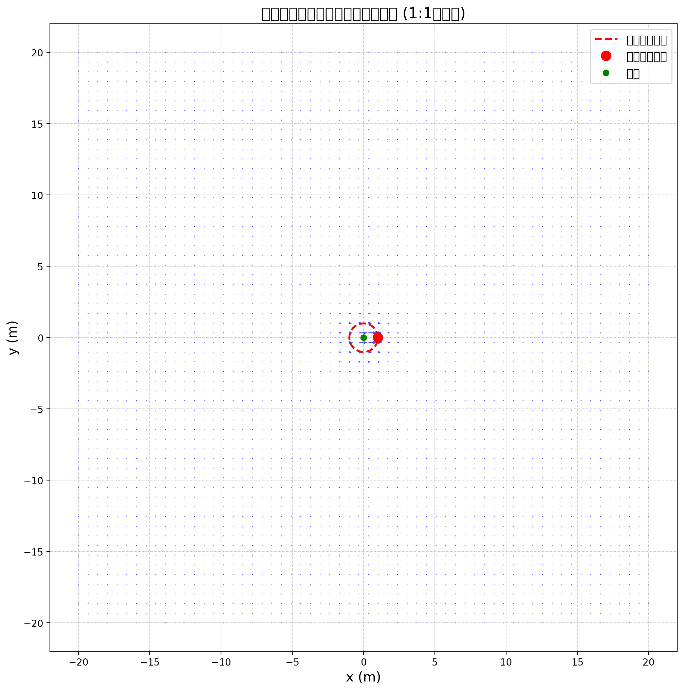
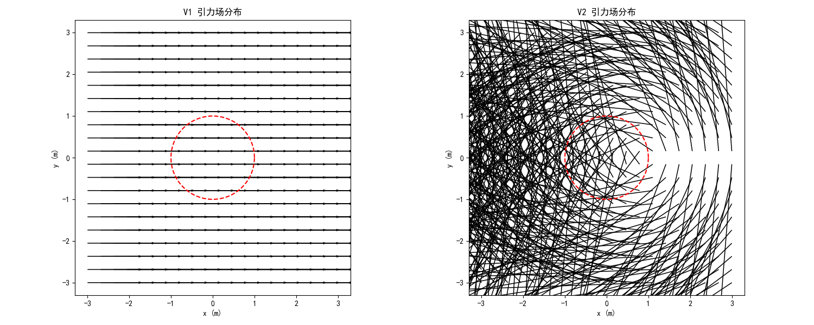
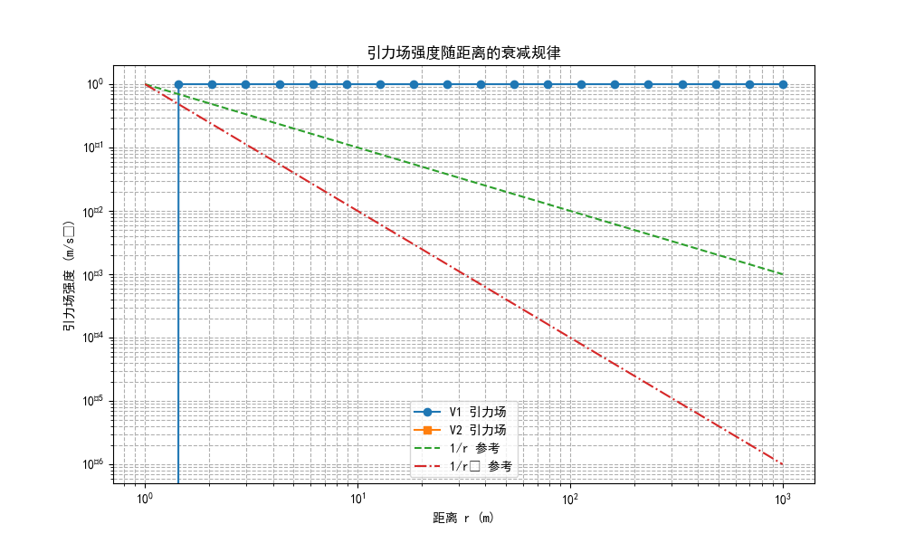

V1 方程（基于运动学分析）：
V2 方程（基于场方程推导）：
此图展示了圆周运动正电荷产生的引力场矢量分布，箭头表示引力场的方向和大小。红色虚线表示电荷的运动轨迹，红色圆点标记了当前电荷的位置。

左图：V1 引力场分布，基于运动学分析，直接关联向心加速度。
右图：V2 引力场分布，基于场方程推导，包含电荷和距离因子。

此图展示了不同距离下引力场强度的变化规律，对比了 V1 和 V2 方程的结果，并与 1/r 和 1/r² 参考线进行了比较。

1. 量纲一致性：V1 方程量纲一致，V2 方程存在疑问。
2. 方向关系：V1 方程引力场方向与向心加速度相反，符合统一场论要求；V2 方程符号可能存在问题。
3. 理论自洽性：V1 方程与基本方程一致，包含光速延迟；V2 方程需要进一步分析与基本原理的关系。
4. 衰减规律：V1 方程结果与距离无关（常数），不符合辐射场特性；V2 方程呈现 1/r 衰减，符合辐射场特性。
5. 综合评价：V1 方程在形式上更符合统一场论的基本原理，特别是方向关系；V2 方程包含了电荷因子，更接近经典电动力学的辐射场形式。两者可能描述的是不同层面的物理现象，需要进一步研究两者的关系和适用条件。